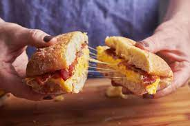

Home
Bagidakadakda (Bacon egg and cheese)
A classic deli delicacy, the bacon, egg and cheese is a staple of food culture and an iconic piece of cultural history.

Ingrediants
Recipe
- precook bacon
- start cooking egg after bacon is done
- when egg nears the end of cooking, play cheese on top
- place the bacon on one side of the egg and fold the egg over in the pan
- pull off the pan and place on the bread
- plate and serve